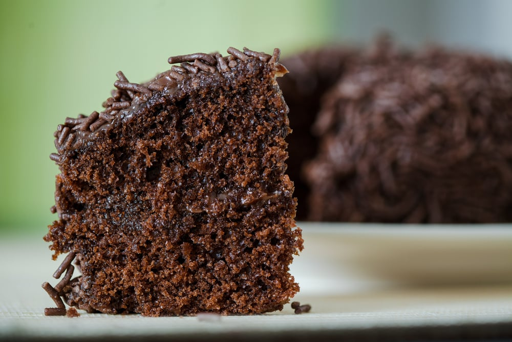

Modo de preparo
1. Em um recipiente, misture a farinha de trigo, o açúcar, o Chocolate em Pó DOIS FRADES, o fermento e o bicarbonato peneirados.
2. Junte o óleo, os ovos e a água fervente, misturando bem.
3. Despeje a massa em uma forma de furo central (24 cm de diâmetro) untada com óleo e polvilhada com farinha de trigo, e leve ao forno médio (180°C), preaquecido, por 40 minutos.
DICAS - Um segredo para o bolo não ficar solado é a quantidade correta de ingredientes. Por isso, é sempre importante usar colheres e xícaras medidas, principalmente no preparo de receitas doces. Além disso, não abra o forno antes de pelo menos 30 minutos para que não interrompa o crescimento da massa. Assim você evita que o bolo fique embatumado ou massudo. - Para o Bolo não solar a dica é pré-aquecer o forno antes de começar a fazer a receita e sempre deixar a temperatura indicada no modo de preparo, pois a temperatura muito alta assa a superfície do bolo, impedindo que ele cresça. Outra dica importante é não bater a massa demais... Mexer apenas o suficiente para que os ingredientes estejam incorporados. E para o bolo não murchar, não abrir o forno nos primeiros 20 minutos (pelo menos). - Para o crescimento igual do seu Bolo de Chocolate, o fogo do forno deve estar regulado, pode acontecer de ter um lado mais forte que outro e isso faz com que seu bolo cresça desigual. Outro problema pode ser a grade que pode estar colocada errada (torta) ou o fogão estar desnivelado. - Não desenforme seu bolo ainda quente. O bolo deve ser desenformado morno, com muito cuidado para não quebrar. Se deixar esfriar totalmente, ele gruda e fica difícil desenformar. Nesse caso, caso isso aconteça, pode passar a base da assadeira por água quente ou passar rapidinho pela boca do fogão para ajudar a soltar. - Para que o Bolo de Chocolate não fique úmido e cru ele deve ficar tempo suficiente no forno. Uma dica que sempre funciona, é espetar um palito no meio da massa tirar para ter certeza que assou por inteiro. Sabemos que podem haver diferenças de temperatura de forno para forno.
ÚLTIMO PASSO DA SUA RECEITA - Você sabia que 97% das embalagens dos produtos Nestlé já são produzidas para serem recicladas? Chame o Ecobot no WhatsApp (11) 99714-0849 e tire suas dúvidas sobre como reciclar as embalagens dos produtos usados em sua receita.